Configural Conflict Display for En-Route Air Traffic Control
An animated radar scope, built in Figma from real flight data, where two converging aircraft form one shape that grows from a faint yellow hint into a solid red warning as a loss of separation becomes likely.
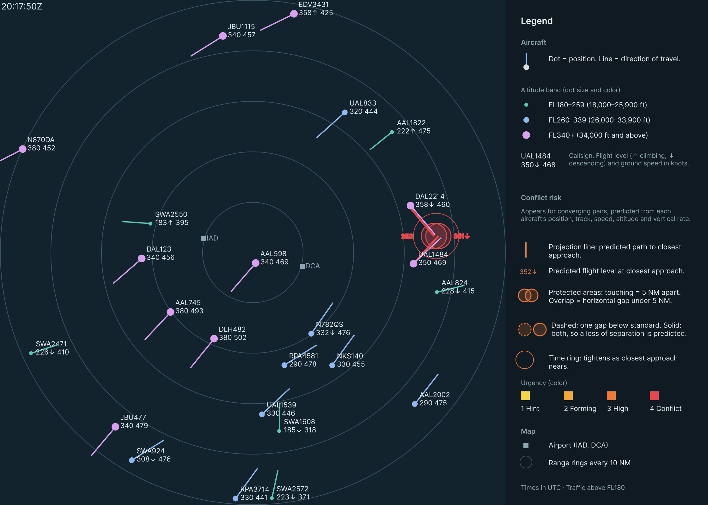
- Course
- ISE 6604: Human Factors of Visual Display Systems
- Instructor
- Dr. Joseph Gabbard
- My role
- Sole designer
- Tools
- Figma Smart Animate, OpenSky Network data, Claude
- Date
- Nov 2026
An individual project. I selected and filtered the data, designed every element, built all seven Figma frames and their Smart Animate transitions, and defined the risk calculation. Claude helped convert the flight data into Figma coordinates.
The problem
En-route controllers must keep aircraft at least 5 NM apart horizontally or 1,000 ft apart vertically. Today they judge that by mentally comparing positions, headings, and data-block numbers, then predicting where two aircraft will be minutes from now.
ERAM’s Conflict Alert flashes both data blocks about 2.5 minutes before a predicted loss of separation, but it’s either on or off and doesn’t show where or why. The distance reference indicator (DRI) ring helps only if the controller turns it on for each aircraft by hand.
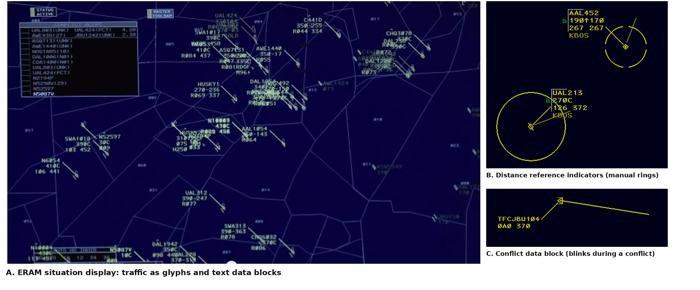
A from Gallagher (2014), Ars Technica, image courtesy of Lockheed Martin. B and C from vNAS Documentation Team (n.d.).
My goal was a display that turns that mental calculation into something a controller can see. It answers the three questions a controller asks continuously:
- Where is everyone?Position, heading, and altitude for every aircraft, from the glyph and data block.
- Is a conflict forming?An early, faint warning, well before a loss of separation.
- How urgent, and why?Urgency, and whether the problem is horizontal, vertical, or both, from color, the time ring, the circles, and the tags.
Real traffic and a risk score
The scope replays real ADS-B data from the OpenSky Network for 1 July 2019, in seven frames from 20:09:50 to 20:17:50 UTC, the busiest stretch of the hour. I kept airborne, en-route traffic above FL180 within 50 NM of the IAD/DCA midpoint, which put 19 to 25 aircraft on screen, and drew it on an 800 × 800 px Figma scope at 8 px per NM.
Real traffic is controlled, so no real pair lost separation. One synthetic aircraft, DAL2214, creates a full conflict with real UAL1484. It looks identical to real traffic, so it doesn’t give the conflict away.
How risk is scored
Each converging pair is projected forward at constant track, speed, and vertical rate. Within a 7-minute look-ahead, the moment of closest approach gives a predicted horizontal and vertical gap. Three factors, each from 0 to 1, are multiplied, so risk is high only when the aircraft will be close in both dimensions, and soon.
| Factor | Rises from 0 at | To 1 at |
|---|---|---|
| Predicted horizontal gap | 15 NM | 5 NM, the separation standard |
| Predicted vertical gap | 3,000 ft | 1,000 ft, the separation standard |
| Time to closest approach | 7 minutes | 1 minute |
Stages begin at a risk of 0.2, 0.4, 0.6, and 0.8. Stage 4 also requires a predicted loss of separation: under 5 NM and under 1,000 ft. Separation standards from FAA (2014a, 2014b).
What each element shows
Every calculated value has its own visible element, so a controller can see both the overall risk and the reason for it.
| Display element | Shows | Flight variables used |
|---|---|---|
| Projection lines | Predicted path to closest approach | Position, track, ground speed |
| Altitude tags | Predicted flight level at closest approach | Altitude, vertical rate |
| Protected circles | Predicted horizontal gap; overlap means under 5 NM | Position, track, ground speed |
| Circle outline | Dashed if one gap is below standard, solid if both are | All five |
| Time ring | Time until closest approach | Position, track, ground speed |
| Stage color and opacity | Overall risk, stages 1 to 4 | All five |
How the design evolved
The design went through four iterations over eight days. I started with a baseline scope with no warning at all, both as a comparison and as the base layer of the final design. The first warning version added projection lines, a connector, and an amber risk zone whose size encoded risk.
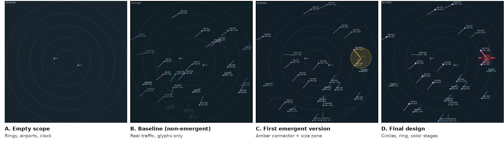
| Change | Why |
|---|---|
| Predict the closest approach instead of using current distance | Prediction uses all five variables and warns minutes earlier. |
| Replace the size-coded zone with 5 NM protected circles | Zone size was a code viewers had to learn. The circles are the separation standard drawn to scale. |
| A dashed or solid outline instead of a side view | A side view would add an element and repeat the altitude tags. |
| Four stage colors, yellow to red From class feedback | Color now rises with urgency, alongside opacity and ring size. The steps also darken, so they stay distinct with red-green color blindness. |
| Altitude shown by dot size and line thickness From class feedback | Altitude reads from the symbol itself. I used thickness, not line length, because on ERAM line length means speed. |
| A legend beside the scope | It explains every encoding so first-time viewers can read the display. |
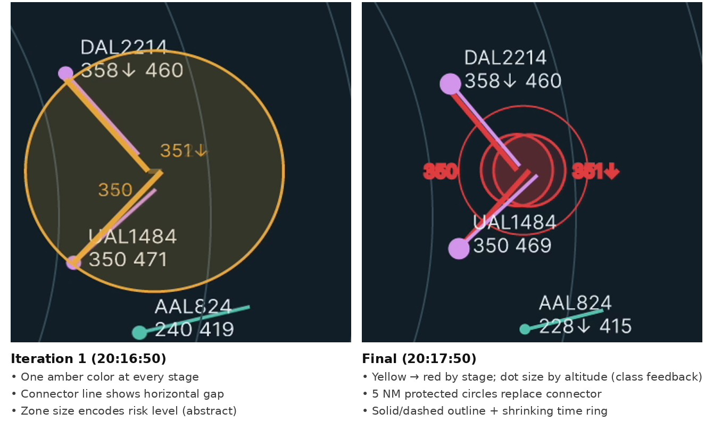
The final design
Step through the seven frames to watch Conflict A build to a predicted loss of separation while Conflict B appears and then resolves.
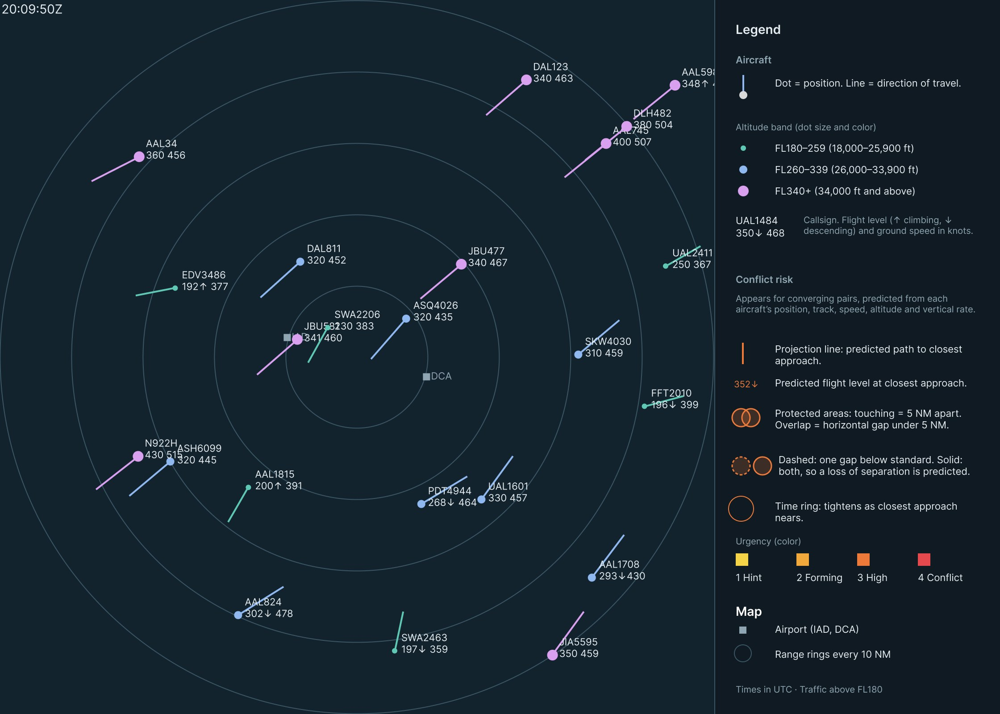
20:09:50 UTC. Traffic only. Two streams cross the scope, northeast and southwest, and no pair is converging closely enough to show risk.
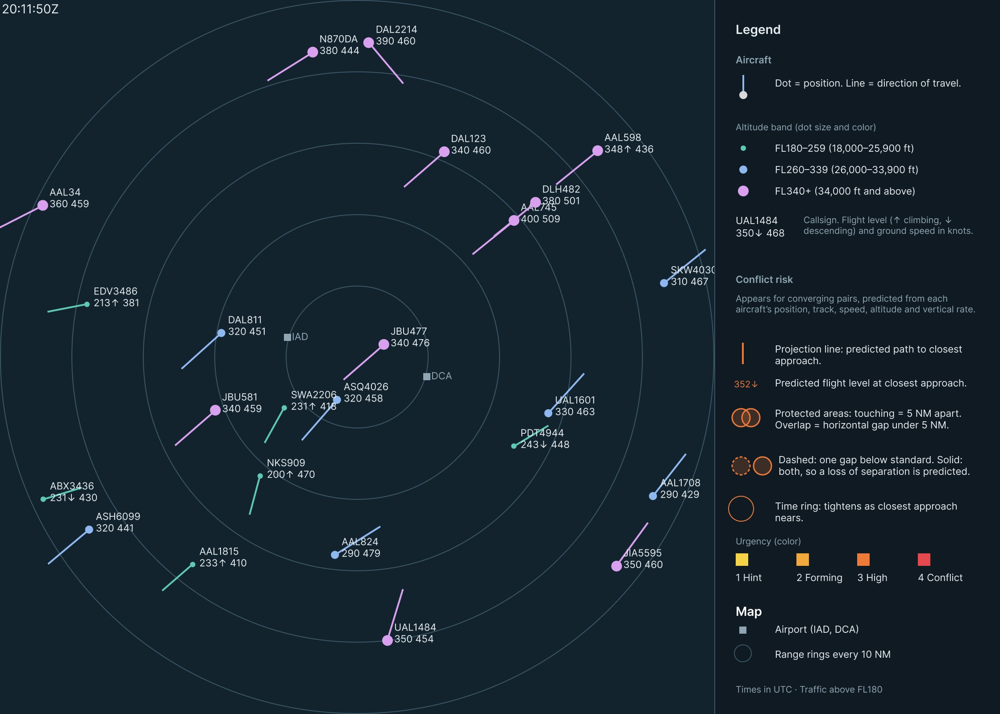
20:11:50 UTC. Synthetic DAL2214 enters from the top at FL390. Its path will cross UAL1484’s, but it hasn’t started descending, so the predicted vertical gap is too large to count as risk.
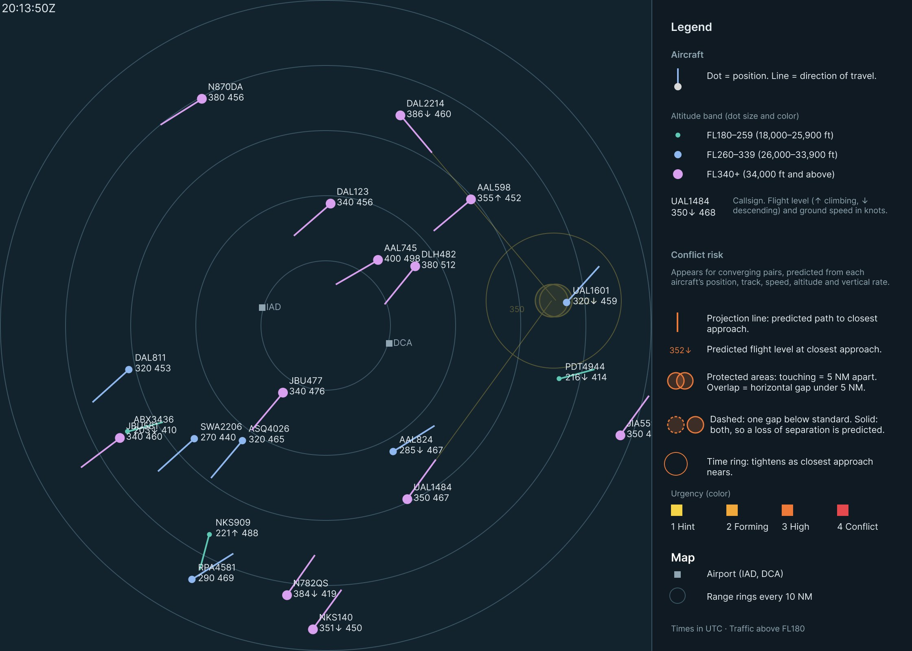
20:13:50 UTC, stage 1. DAL2214 starts descending and the predicted gaps collapse to about 0.6 NM and 220 ft. The shape appears faintly in yellow, about 4 min 50 s before closest approach.
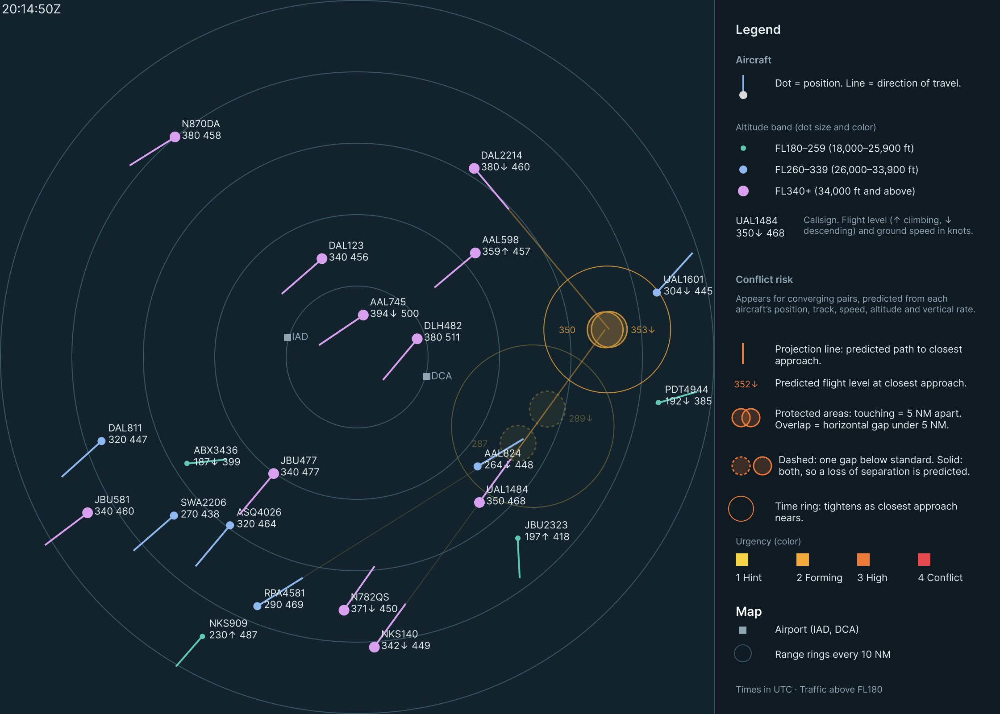
20:14:50 UTC, stage 2. Conflict A turns amber. Conflict B appears for NKS140 and RPA4581 at stage 1, with dashed circles that don’t overlap.
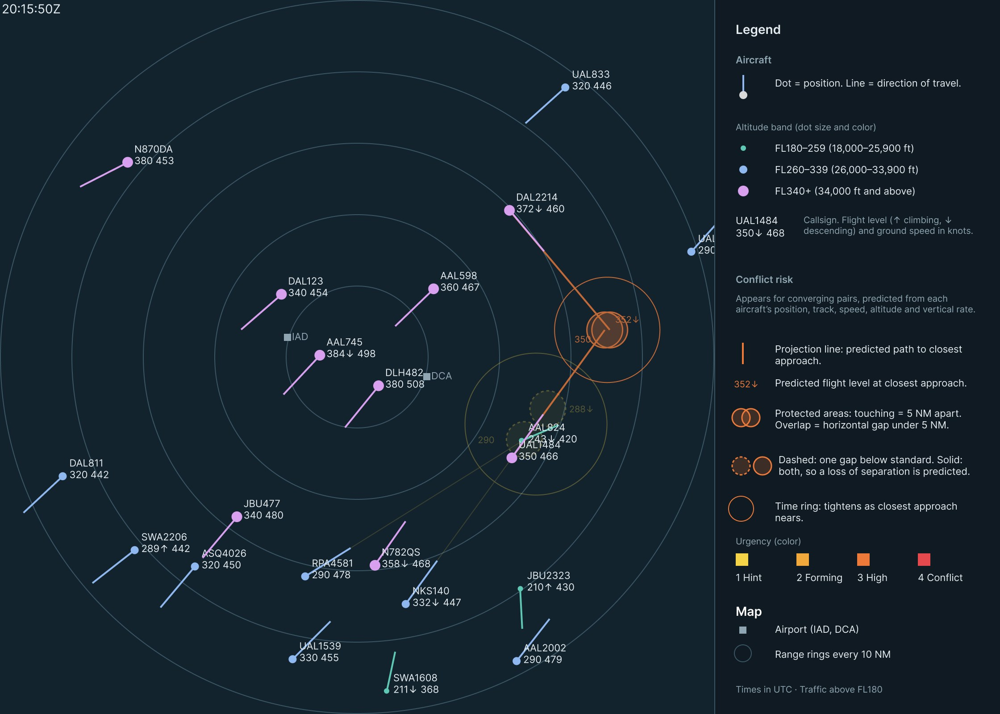
20:15:50 UTC, stage 3. Conflict A turns orange and the time ring tightens. Conflict B holds at stage 1: its vertical gap is closing, its horizontal gap isn’t.
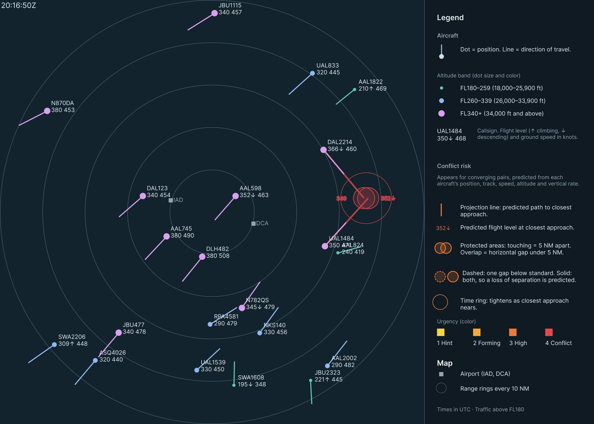
20:16:50 UTC, stage 4. A predicted loss of separation, about 1 min 55 s ahead. Conflict B fades as RPA4581 keeps descending.
20:17:50 UTC, stage 4. 56 seconds before closest approach. The circles overlap with a solid outline, and the ring has nearly closed around them.
Stage 4 arrives about 2 minutes ahead, close to when ERAM’s Conflict Alert would fire. Stages 1 to 3 add about three minutes of earlier, gradual warning.
Reading the display
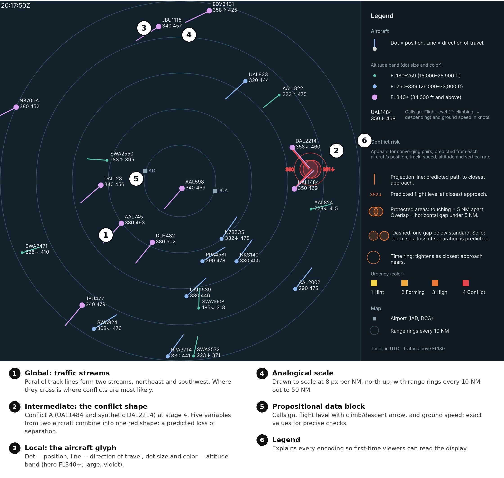
Conflict A builds. Real UAL1484 heads northeast at FL350 while synthetic DAL2214 heads southeast, descending from FL390. Their predicted paths meet less than 1 NM and a few hundred feet apart, and every one of the five variables can be traced within the one shape.
Conflict B resolves. Real RPA4581 overtakes real NKS140 while descending through its altitude. The vertical gap shrinks to about 200 ft, but the horizontal gap stays near 5.4 NM, so the circles stay dashed and never overlap. The shape fades by 20:16:50.
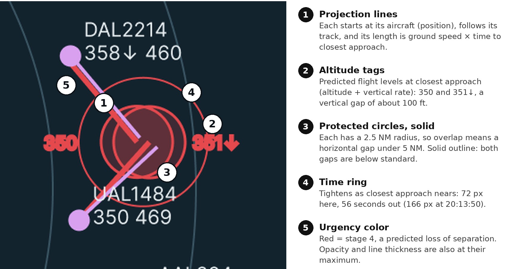
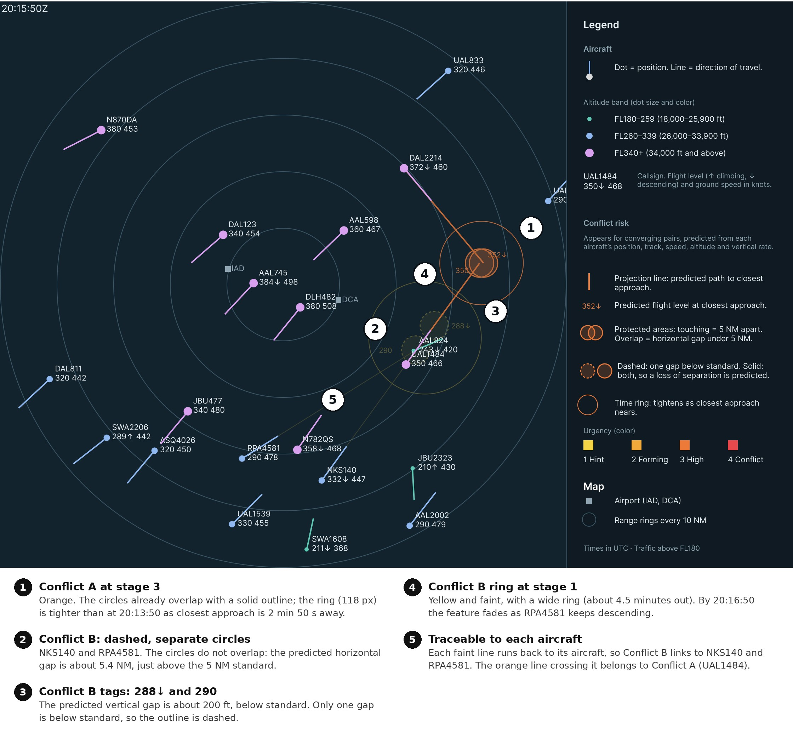
Try it. The Figma prototype animates between all seven frames.
Why it works
Six display design concepts from Bennett and Flach (2011) and the course lectures (Gabbard, 2026) shape every element.
| Concept | How the display applies it |
|---|---|
| Emergent features | At three levels: track lines form traffic streams; projection lines, circles, tags, and the ring form the conflict shape; dot, line, size, and color form each aircraft glyph. |
| Semantic mapping | Each protected circle has a 2.5 NM radius, so two circles touch at exactly 5 NM, and the outline turns solid only when both gaps fall below the FAA standards. |
| Proximity compatibility | A conflict integrates ten values, five per aircraft, so every conflict element shares one place and one warm color. Cool-colored aircraft details stay in separate data blocks. |
| Analogical format | The scope is a scaled map: projection length is distance flown, circle overlap is the horizontal gap, and ring size is time remaining. Data blocks keep exact values. |
| Redundant coding | Altitude is coded by color and symbol size. Urgency is coded by color, opacity, and ring size, so the display still reads with color vision deficiency. |
| Salience | Yellow to red and faint to opaque, so salience rises only as risk rises and the most urgent conflict draws the eye first. |
Compared with ERAM
| ERAM Conflict Alert | ERAM DRI ring | This design | |
|---|---|---|---|
| Trigger | Automatic, about 2.5 min ahead | Manual, per aircraft | Automatic, up to 7 min ahead |
| Signal | Data blocks flash | Fixed ring | Builds through four stages |
| Shows where | No | Current position only | Predicted meeting point |
| Vertical gap | Read from data blocks | Not shown | Altitude tags and outline style |
| Shows why | No | Horizontal distance only | Traceable to all five variables |
| Resolution | Alert stops | Not shown | Shape visibly fades |
What’s new: the shape sits at a place that doesn’t exist yet, the predicted meeting point, and it’s graded, so a controller sees a conflict forming rather than a threshold being crossed.
What I learned and next steps
A good emergent feature has to mean something in the domain. My first risk zone was striking but abstract; redrawing it as the separation standard itself made the shape explain the conflict instead of just flagging it. Building it also showed me how much Smart Animate depends on structure: every layer must be named and nested identically across frames.
- LimitationsMotion is straight-line between frames 1 to 2 minutes apart, and the prediction assumes steady track, speed, and vertical rate. Only two conflicts are shown, one with a synthetic aircraft, and tracks use true rather than magnetic north.
- Next stepsTest the display against ERAM’s Conflict Alert for detection time and accuracy, check clutter with several simultaneous conflicts, and build a continuously updating version in code.
Sources Show all 9Hide
- Anthropic. (2026). Claude (Opus 5.5 version) [Large language model]. https://claude.ai
- Bennett, K. B., & Flach, J. M. (2011). Display and interface design: Subtle science, exact art. CRC Press.
- Federal Aviation Administration. (2014a). Section 5. Altitude assignment and verification. In Air traffic control (FAA Order JO 7110.65V). U.S. Department of Transportation. https://www.faa.gov/air_traffic/publications/atpubs/atc/atc0405.html
- Federal Aviation Administration. (2014b). Section 5. Radar separation. In Air traffic control (FAA Order JO 7110.65V). U.S. Department of Transportation. https://www.faa.gov/air_traffic/publications/atpubs/atc/atc0505.html
- Gabbard, J. (2026, October 13). Design approach 2: Visual attention & perceptual form [Lecture]. Grado Department of Industrial & Systems Engineering, Virginia Tech.
- Gallagher, S. (2014, May 12). U-2’s flight plan was like malware to FAA computer system. Ars Technica. https://arstechnica.com/information-technology/2014/05/u-2s-flight-plan-was-like-malware-to-faa-computer-system/
- Schäfer, M., Strohmeier, M., Lenders, V., Martinovic, I., & Wilhelm, M. (2014). Bringing up OpenSky: A large-scale ADS-B sensor network for research. In Proceedings of the 13th International Symposium on Information Processing in Sensor Networks (pp. 83–94). IEEE. https://doi.org/10.1109/IPSN.2014.6846743
- The OpenSky Network. (2019). Historical state vector data: States 2019-07-01, 20:00 UTC [Data set]. https://opensky-network.org
- vNAS Documentation Team. (n.d.). ERAM. vNAS Documentation. Retrieved October 26, 2026, from https://docs.virtualnas.net/crc/eram/
Flight data from the OpenSky Network, cited as its license requests. DAL2214 is a synthetic aircraft added for demonstration; all other aircraft are real.